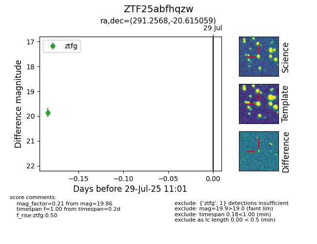

Target ZTF25abfhqzw at 2025-07-29 11:01, see:
FINK: fink-portal.org/ZTF25abfhqzw
Lasair: lasair-ztf.lsst.ac.uk/objects/ZTF25abfhqzw
ALeRCE: alerce.online/object/ZTF25abfhqzw
alt names
ZTF25abfhqzw (ztf,fink)
coordinates:
equatorial (ra, dec) = (291.2568,-20.61506)
galactic (l, b) = (17.7632,-16.39121)
photometry
last ztfg=19.86
1 ztfg detections
